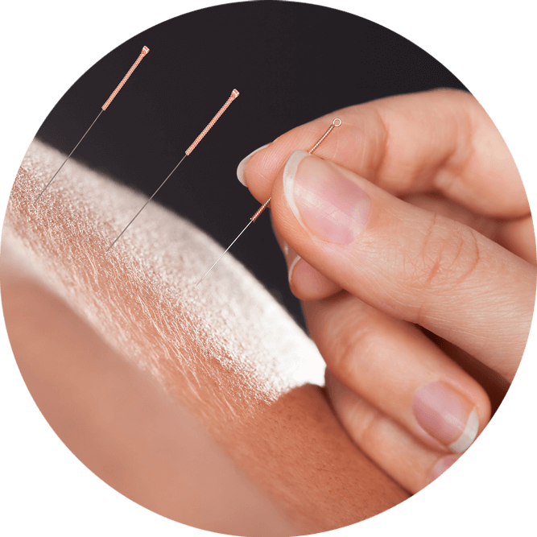

Acupuntura
La acupuntura consta de una amplia variedad de técnicas ligeramente invasivas, indoloras con una alta efectividad en el tratamiento del dolor y trastornos psicoemocionales, con un amplio rango de tratamiento en todo tipo de patologías.
Fitoterapia
La Fitoterapia es una rama de la MTC que utiliza distintos procesamientos de plantas naturales para el tratamiento de todo tipo de patologías.
Moxibustión
La moxibustion es una excelente técnica complementaria para el tratamiento de todo tipo de dolores o distintos tipos de patologías.
Tui Na
El masaje Tui Na es otra de las grandes técnicas complementarias de la MTC.
Ventosas
Las ventosas son otro tipo de técnica complementaria con gran éxito en el tratamiento de los dolores y patologías generales.